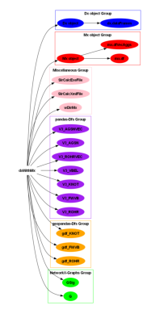

UML Diagram Creation
[1]:
#pip install pylint nbqa graphviz
[2]:
#conda install -c conda-forge graphviz
[3]:
#pip show pylint
[4]:
from PIL import Image
import os
import os
import subprocess
from IPython.display import Image
from graphviz import Digraph
from IPython.display import Image, display
Class Diagram
[5]:
project_root = r'C:\Users\jablonski\3S\PT3S'
output_dir = r'C:\Users\jablonski\3S\PT3S\sphinx_docs\uml'
[6]:
modules = [
'Am.py', 'conf.py', 'Dx.py', 'dxAndMxHelperFcts.py', 'dxAecodeObjsAata.py',
'Lx.py', 'Mx.py', 'ncd.py', 'NFA.py', 'pNFA.py', 'Rm.py', 'sdfCsv.py', 'setup.py',
'Xm.py', 'lds/rpts.py', 'lds/__init__.py', 'UTILS/Ab.py', 'UTILS/Xml.py', 'UTILS/__init__.py'
]
modules = [
'Dx.py', 'dxAndMxHelperFcts.py', 'Mx.py'
]
[7]:
# Change to the directory containing your project
os.chdir(r'C:\Users\jablonski\3S\PT3S\sphinx_docs\uml')
[8]:
#!python "C:\Users\jablonski\AppAata\Local\anaconda3\Scripts\pyreverse-script.py" -o html -p PT3S .
[42]:
for module in modules:
module_path = os.path.join(project_root, module)
output_prefix = os.path.splitext(os.path.basename(module))[0]
# Run pyreverse command
command = [
'pyreverse', '-o', 'png', '-p', output_prefix, '-d', output_dir, module_path
]
subprocess.run(command, check=True)
[10]:
from PIL import Image
def crop_image(image_path, x_percent):
# Open an image file
with Image.open(image_path) as img:
# Calculate the cropping box
width, height = img.size
new_width = width - int(width * (x_percent / 100))
box = (0, 0, new_width, height)
# Crop the image
cropped_img = img.crop(box)
# Save the cropped image with '_cropped' suffix
base, ext = os.path.splitext(image_path)
cropped_image_path = f"{base}_cropped{ext}"
cropped_img.save(cropped_image_path)
return cropped_image_path
[11]:
image_path = r'C:\\Users\\jablonski\\3S\\PT3S\\sphinx_docs\\uml\\classes_dxAndMxHelperFcts.png'
[12]:
x_percent = 72 # Percentage to crop from the right
[13]:
cropped_image_path = crop_image(image_path, x_percent)
print(f"Cropped image saved at: {cropped_image_path}")
Cropped image saved at: C:\\Users\\jablonski\\3S\\PT3S\\sphinx_docs\\uml\\classes_dxAndMxHelperFcts_cropped.png
Diagram 2
[37]:
dot = Digraph()
# Main node in its own cluster
with dot.subgraph(name='cluster_root') as c:
c.attr(label='', color='white', fontsize='14', fontname='Arial Bold')
c.node('A', 'dxWithMx', color='white', style='filled', fontsize='14', fontname='Arial Bold')
# Dx object and its attributes
dot.node('B', 'Dx object', color='blue', style='filled', fontsize='14', fontname='Arial Bold')
dot.edge('A', 'B')
with dot.subgraph(name='cluster_0') as c:
c.attr(label='Dx object Group', color='blue', fontsize='14', fontname='Arial Bold')
c.node('B1', 'dx.dataFrames', color='blue', style='filled', fontsize='14', fontname='Arial Bold')
c.edge('B', 'B1')
# Mx object and its attributes
dot.node('C', 'Mx object', color='red', style='filled', fontsize='14', fontname='Arial Bold')
dot.edge('A', 'C')
with dot.subgraph(name='cluster_1') as c:
c.attr(label='Mx object Group', color='red', fontsize='14', fontname='Arial Bold')
c.node('C1', 'mx.df', color='red', style='filled', fontsize='14', fontname='Arial Bold')
c.node('C2', 'mx.dfVecAggs', color='red', style='filled', fontsize='14', fontname='Arial Bold')
c.edge('C', 'C1')
c.edge('C', 'C2')
# Miscellaneous attributes
with dot.subgraph(name='cluster_2') as c:
c.attr(label='Miscellaneous Group', color='pink', fontsize='14', fontname='Arial Bold')
c.node('A13', 'wDirMx', color='pink', style='filled', fontsize='14', fontname='Arial Bold')
c.node('A14', 'SirCalcXmlFile', color='pink', style='filled', fontsize='14', fontname='Arial Bold')
c.node('A15', 'SirCalcExeFile', color='pink', style='filled', fontsize='14', fontname='Arial Bold')
c.edge('A', 'A13')
c.edge('A', 'A14')
c.edge('A', 'A15')
# pandas-Dfs with Model AND Result Data
with dot.subgraph(name='cluster_3') as c:
c.attr(label='pandas-Dfs Group', color='purple', fontsize='14', fontname='Arial Bold')
c.node('A1', 'V3_ROHR', color='purple', style='filled', fontsize='14', fontname='Arial Bold')
c.node('A2', 'V3_FWVB', color='purple', style='filled', fontsize='14', fontname='Arial Bold')
c.node('A3', 'V3_KNOT', color='purple', style='filled', fontsize='14', fontname='Arial Bold')
c.node('A4', 'V3_VBEL', color='purple', style='filled', fontsize='14', fontname='Arial Bold')
c.node('A5', 'V3_ROHRVEC', color='purple', style='filled', fontsize='14', fontname='Arial Bold')
c.node('A6', 'V3_AGSN', color='purple', style='filled', fontsize='14', fontname='Arial Bold')
c.node('A7', 'V3_AGSNVEC', color='purple', style='filled', fontsize='14', fontname='Arial Bold')
c.edge('A', 'A1')
c.edge('A', 'A2')
c.edge('A', 'A3')
c.edge('A', 'A4')
c.edge('A', 'A5')
c.edge('A', 'A6')
c.edge('A', 'A7')
# geopandas-Dfs
with dot.subgraph(name='cluster_4') as c:
c.attr(label='geopandas-Dfs Group', color='orange', fontsize='14', fontname='Arial Bold')
c.node('A8', 'gdf_ROHR', color='orange', style='filled', fontsize='14', fontname='Arial Bold')
c.node('A9', 'gdf_FWVB', color='orange', style='filled', fontsize='14', fontname='Arial Bold')
c.node('A10', 'gdf_KNOT', color='orange', style='filled', fontsize='14', fontname='Arial Bold')
c.edge('A', 'A8')
c.edge('A', 'A9')
c.edge('A', 'A10')
# NetworkX-Graphs
with dot.subgraph(name='cluster_5') as c:
c.attr(label='NetworkX-Graphs Group', color='lime', fontsize='14', fontname='Arial Bold')
c.node('A11', 'G', color='lime', style='filled', fontsize='14', fontname='Arial Bold')
c.node('A12', 'GSig', color='lime', style='filled', fontsize='14', fontname='Arial Bold')
c.edge('A', 'A11')
c.edge('A', 'A12')
# Set the direction of the graph layout to left-to-right
dot.attr(rankdir='LR')
# Save the diagram to the specified path
dot.render('dxWithMx_diagram', format='png')
[37]:
'dxWithMx_diagram.png'
[38]:
import matplotlib.pyplot as plt
import matplotlib.image as mpimg
img = mpimg.imread('dxWithMx_diagram.png')
imgplot = plt.imshow(img)
plt.axis('off') # Hide axes
plt.show()

[43]:
from PIL import Image
# Open the images
image1 = Image.open('classes_dxAndMxHelperFcts_cropped.png')
image2 = Image.open('dxWithMx_diagram.png')
# Resize images to have the same height
height = max(image1.height, image2.height)
image1 = image1.resize((int(image1.width * height / image1.height), height))
image2 = image2.resize((int(image2.width * height / image2.height), height))
# Create a new image with the combined width of both images
combined_width = image1.width + image2.width
new_image = Image.new('RGB', (combined_width, height))
# Paste the images side by side
new_image.paste(image1, (0, 0))
new_image.paste(image2, (image1.width, 0))
# Save the new image
new_image.save('combined_image.png')
# Display the new image
new_image.show()
[ ]: